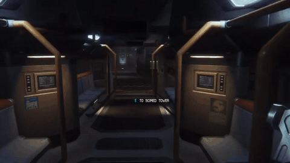
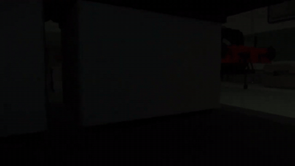

Alien: Isolation review: survival horror, but the Alien is Thomas the Tank Engine

Alien: Isolation is survival horror from Creative Assembly, set 15 years after the first Alien movie. You play Amanda Ripley on Sevastopol, a decommissioned trading station, while a single Alien hunts you using its senses. You can't really fight it, so you scavenge, craft, hack and hide.
In Part 3 of our run, the Alien is modded into Thomas the Tank Engine. It just wants to eat me and nobody else. It charged down a train car at me, rolled its wheels right past while I hid under a desk, and kept proving it has access to the vents.

I learned that a gun does not solve an Alien problem, entered a lot of lockers very loudly, met more androids, and found a skull on a desk wearing sunglasses, which felt like a warning. By the end, reaching a save point counted as a victory.

It's $9.99 on Steam. Part 3 of our run is below, Thomas and all.